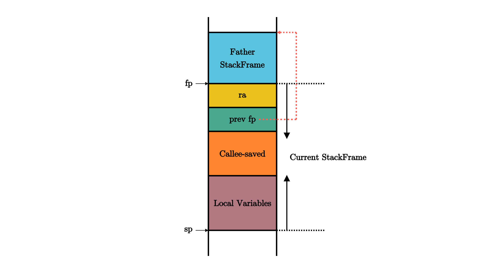

200 行 Rust 代码实现绿色线程 / 有栈协程
2024-10-29
最近在清华大学 rCore 内核教程中看到这段 200 行的示例代码，觉得很有趣，但为了不跟 rCore 内核绑定，我将其移植到 Linux for RISC-V64 上，并且重构了许多代码，修复了一些问题，增强了其可读性，具体见 https://github.com/systemxlabs/green-threads-in-200-lines-of-rust。
前置知识：RISC-V 架构和函数调用规约
RISC-V 是一个模块化的精简指令集架构，这里我们以 RV64I 模块（64 位基本整数指令集）为例
- 包含基本的整数运算指令（算术/逻辑/移位）、分支和跳转指令、内存交互指令
- 提供 32 个整数寄存器（x0-x31），其中 x0 硬连线为 0（恒为 0），这些寄存器有一些别名，如 x1 用于存放函数返回地址，也称 ra 寄存器，x2 用于存放栈指针，也称 sp 寄存器
- 指令长度为 32 位，寄存器位宽是 64
| 寄存器组 | 保存者 | 功能 |
|---|---|---|
| a0~a7（x10~x17） | 调用者保存 | 用来传递输入参数，其中的 a0 和 a1 还用来保存返回值 |
| t0~t6 (x5~x7, x28~x31) | 调用者保存 | 作为临时寄存器使用，在被调函数中可以随意使用无需保存 |
| s0~s11 (x8~x9, x18~x27) | 被调用者保存 | 作为临时寄存器使用，被调函数保存后才能在被调函数中使用，其中 fp (s0) 也可作为栈帧指针寄存器，表示当前栈帧的起始位置 |
| ra (x1) | 被调用者保存 | 存放函数返回地址 |
| sp (x2) | 被调用者保存 | 栈指针寄存器，指向栈顶位置 |
| zero (x0) | N/A | 恒为零 |
何为调用者保存寄存器和被调用者保存寄存器？
- 由于每个 CPU 只有一套寄存器，函数调用前后会导致寄存器的值被覆盖，因此需要将寄存器的值提前保存到栈上，后续从栈上恢复这些寄存器的值，这个过程由函数调用者和被调用者合作完成
- 被调用者保存 (Callee-Saved) 寄存器 ：被调用的函数可能会覆盖这些寄存器，需要被调用的函数来保存的寄存器，即由被调用的函数来保证在调用前后，这些寄存器保持不变
- 调用者保存 (Caller-Saved) 寄存器 ：被调用的函数可能会覆盖这些寄存器，需要发起调用的函数来保存的寄存器，即由发起调用的函数来保证在调用前后，这些寄存器保持不变
函数调用是通过压栈和出栈的方式，每个函数执行都有其对应的栈帧

一个函数可能的栈帧内容  它的开头和结尾分别在 sp 和 fp 寄存器所指向的地址。按照地址从高到低分别有以下内容，它们都是通过 sp 加上一个偏移量来访问的：
- ra 寄存器保存子函数返回之后需要跳转的地址
- 父亲栈帧的结束地址 fp
- 其他被调用者保存寄存器 s1 ~ s11
- 函数所使用到的局部变量
函数 A 调用函数 B 具体完整过程（抛开编译器优化）：
- 函数 A 保存“调用者保存寄存器”到其栈帧内
- 函数 A 设置输入参数到 a0-a7 寄存器
- 函数 A 跳转到函数 B 入口并设置 ra 寄存器为函数 A 跳转指令的下一条指令地址（pc + 4），这个过程是一条指令完成
- 函数 B 向下移动 sp 栈指针来分配其栈帧空间，例如
addi sp, sp, -64分配 64 字节栈帧 - 函数 B 保存 ra 寄存器到其栈帧内，例如
sd ra, 56(sp) - 函数 B 保存“被调用者保存寄存器”到其栈帧内
- 函数 B 更新 fp 寄存器为其栈帧顶端地址，例如
addi fp, sp, 64 - 函数 B 从 a0-a7 寄存器读取输入参数并执行（可能继续调用其他函数）
- 函数 B 将返回值保存到 a0-a1 寄存器
- 函数 B 从其栈帧内恢复 ra 寄存器，例如
ld ra, 56(sp) - 函数 B 从其栈帧内恢复“被调用者保存寄存器”
- 函数 B 向上移动 sp 栈指针来回收其栈帧空间，例如
addi sp, sp, 64回收 64 字节栈帧 - 函数 B 跳转到 ra 寄存器指向的返回地址，例如
jalr x0, 0(ra) - 函数 A 从其栈帧内恢复“调用者保存寄存器”
- 函数 A 继续向下执行
更详细介绍可见此文章。
注：以下线程均指绿色线程。
定义一个线程
struct Thread {
id: usize,
stack: Vec<u8>,
ctx: ThreadContext,
state: State,
}
enum State {
Available,
Running,
Ready,
}
#[repr(C)]
pub struct ThreadContext {
ra: u64,
sp: u64,
s0: u64,
s1: u64,
s2: u64,
s3: u64,
s4: u64,
s5: u64,
s6: u64,
s7: u64,
s8: u64,
s9: u64,
s10: u64,
s11: u64,
entry: u64,
}
一个线程包含：
- 线程 id
- 执行状态：Availabe 表示空闲，可分配新任务执行；Running 表示正在执行任务；Ready 表示已分配任务，可以被调度执行，任务可能未开始也可能被中途挂起了
- 任务上下文：被调用者保存寄存器，用于恢复挂起的任务继续执行；entry 是任务的入口地址，只在首次被调度时使用
- 栈：分配在进程对应的堆区（固定大小、不会扩容）
定义线程运行时
static mut RUNTIME: usize = 0;
pub struct Runtime {
threads: Vec<Thread>,
current: usize,
}
impl Runtime {
pub fn new() -> Self {
let base_thread_id = 0;
let base_thread = Thread::new_with_state(base_thread_id, State::Running);
let mut threads = vec![base_thread];
let mut available_threads = (1..MAX_THREADS + 1).map(|i| Thread::new(i)).collect();
threads.append(&mut available_threads);
Runtime {
threads,
current: base_thread_id,
}
}
pub fn init(&self) {
unsafe {
let r_ptr: *const Runtime = self;
RUNTIME = r_ptr as usize;
}
}
}
运行时在创建时会预创建若干线程，current 代表正在执行的线程
- 一个 base 线程，用于 Runtime 本身的代码执行，此时处于 Runtime 执行流，因此状态为 Running
- 若干 user 线程，用于用户任务的代码执行，此时没有绑定任务，因此状态均为 Available
使用全局变量存储 Runtime 地址，便于后续全局访问 Runtime。
创建用户任务
impl Runtime {
pub fn spawn(&mut self, f: fn()) {
let available = self
.threads
.iter_mut()
.find(|t| t.state == State::Available)
.expect("no available green thread.");
println!("RUNTIME: spawning task on green thread {}", available.id);
let size = available.stack.len();
unsafe {
let s_ptr = available.stack.as_mut_ptr().offset(size as isize);
let s_ptr = (s_ptr as usize & !7) as *mut u8;
available.ctx.ra = task_return as u64; // task return address
available.ctx.sp = s_ptr as u64; // stack pointer
available.ctx.entry = f as u64; // task entry address
}
available.state = State::Ready;
}
fn t_return(&mut self) {
self.threads[self.current].state = State::Available;
self.t_schedule();
}
}
fn task_return() {
unsafe {
let rt_ptr = RUNTIME as *mut Runtime;
(*rt_ptr).t_return();
}
}
用户任务是一个无参数的函数，创建任务就是将函数跑在线程上。
创建过程：
- 首先找到一个空闲的线程，然后初始化其栈顶指针为其所属栈空间
Vec<u8>的最高地址，并确保 8 字节对齐（RISC-V64 要求 ld/sd 访存指令的数据地址是 8 字节对齐） - 设定任务入口地址为函数
f - 设定任务返回地址为
task_return函数，当任务执行完毕时，会跳转到task_return地址执行，然后调用Runtime::t_return()来标记当前线程空闲，并调度/切换到下一个 ready 的线程继续执行
调度线程
impl Runtime {
pub fn run(&mut self) {
while self.t_yield() {}
println!("All tasks finished!");
}
fn t_yield(&mut self) -> bool {
self.threads[self.current].state = State::Ready;
self.t_schedule()
}
fn t_schedule(&mut self) -> bool {
let thread_count = self.threads.len();
let mut pos = (self.current + 1) % thread_count;
while self.threads[pos].state != State::Ready {
pos = (pos + 1) % thread_count;
if pos == self.current {
return false;
}
}
println!("RUNTIME: schedule next thread {} to be run", pos);
self.threads[pos].state = State::Running;
let old_pos = self.current;
self.current = pos;
unsafe {
switch(&mut self.threads[old_pos].ctx, &self.threads[pos].ctx);
}
true
}
}
pub fn r#yield() {
unsafe {
let rt_ptr = RUNTIME as *mut Runtime;
(*rt_ptr).t_yield();
};
}
t_schedule方法：用于寻找下一个 ready 的线程并从当前线程切换过去t_yield方法：用于挂起当前线程，并调用t_schedule方法切到下一个 ready 的线程run方法：启动 Runtime，不断循环调用t_yield来挂起自身（base 线程），然后切换到下一个 ready 的 user 线程，直至用户任务均执行完毕r#yield函数：用户任务代码使用此函数挂起所在线程
切换线程
#[naked]
#[no_mangle]
unsafe extern "C" fn switch(old: *mut ThreadContext, new: *const ThreadContext) {
naked_asm!(
"
sd ra, 0*8(a0)
sd sp, 1*8(a0)
sd s0, 2*8(a0)
sd s1, 3*8(a0)
sd s2, 4*8(a0)
sd s3, 5*8(a0)
sd s4, 6*8(a0)
sd s5, 7*8(a0)
sd s6, 8*8(a0)
sd s7, 9*8(a0)
sd s8, 10*8(a0)
sd s9, 11*8(a0)
sd s10, 12*8(a0)
sd s11, 13*8(a0)
sd ra, 14*8(a0)
ld ra, 0*8(a1)
ld sp, 1*8(a1)
ld s0, 2*8(a1)
ld s1, 3*8(a1)
ld s2, 4*8(a1)
ld s3, 5*8(a1)
ld s4, 6*8(a1)
ld s5, 7*8(a1)
ld s6, 8*8(a1)
ld s7, 9*8(a1)
ld s8, 10*8(a1)
ld s9, 11*8(a1)
ld s10, 12*8(a1)
ld s11, 13*8(a1)
ld t0, 14*8(a1)
jr t0
"
);
}
由于需要精确操作寄存器，使用内联汇编实现
- 函数的两个入参保存在 a0 和 a1 寄存器
- 使用裸函数：无需编译器在开头生成保存寄存器的汇编（Prologue）和在结尾生成恢复寄存器的汇编（Epilogue）（也可以使用
global_asm!宏实现，参见仓库代码）
在第一次执行 switch 函数时，从 base 线程切换到 user 线程
- 保存 Runtime 执行流上下文到 base 线程对应的 ThreadContext 中（后续才能切换回 base 线程继续向下执行 Runtime 代码）
- 加载首个任务执行上下文，
ld t0, 14*8(a1)加载用户任务入口地址（ThreadContext 中 entry 值），所以可以跳转到任务开头向下执行
在 switch 函数从某个 user 线程第一次切换出去时
- 保存当前 user 线程上下文到对应的 ThreadContext 中，此时 ThreadContext 中的任务入口地址 entry 会被实际的返回地址覆盖（这样后续切换回来不会导致又从头开始执行任务）
- 恢复下一个线程上下文并继续执行
用户代码测试
const MAX_THREADS: usize = 4;
static FINISHED_TASK_COUNT: AtomicUsize = AtomicUsize::new(0);
fn main() {
let mut runtime = Runtime::new();
runtime.init();
runtime.spawn(|| {
test_task(1);
});
runtime.spawn(|| {
test_task(2);
});
runtime.spawn(|| {
test_task(3);
});
runtime.run();
assert_eq!(FINISHED_TASK_COUNT.load(Ordering::SeqCst), 3);
}
fn test_task(task_id: usize) {
println!("TASK {} STARTING", task_id);
for i in 0..4 * task_id {
println!("task: {} counter: {}", task_id, i);
r#yield();
}
FINISHED_TASK_COUNT.fetch_add(1, Ordering::SeqCst);
println!("TASK {} FINISHED", task_id);
}
- 在 Runtime 运行之前，有 1 个 Running 状态的 base 线程、3 个 Ready 状态的 user 线程和 1 个 Available 状态的 user 线程
- base 线程会在 Running 和 Ready 状态之间不断切换
- 3 个 user 线程会在 Running 和 Ready 状态之间不断切换，当任务执行完毕后，变成 Available 状态
- 1 个 user 线程始终保持在 Available 状态
输出
RUNTIME: spawning task on green thread 1
RUNTIME: spawning task on green thread 2
RUNTIME: spawning task on green thread 3
RUNTIME: schedule next thread 1 to be run
TASK 1 STARTING
task: 1 counter: 0
RUNTIME: schedule next thread 2 to be run
TASK 2 STARTING
task: 2 counter: 0
RUNTIME: schedule next thread 3 to be run
TASK 3 STARTING
task: 3 counter: 0
RUNTIME: schedule next thread 0 to be run
RUNTIME: schedule next thread 1 to be run
task: 1 counter: 1
RUNTIME: schedule next thread 2 to be run
task: 2 counter: 1
RUNTIME: schedule next thread 3 to be run
task: 3 counter: 1
RUNTIME: schedule next thread 0 to be run
RUNTIME: schedule next thread 1 to be run
task: 1 counter: 2
RUNTIME: schedule next thread 2 to be run
task: 2 counter: 2
RUNTIME: schedule next thread 3 to be run
task: 3 counter: 2
RUNTIME: schedule next thread 0 to be run
RUNTIME: schedule next thread 1 to be run
task: 1 counter: 3
RUNTIME: schedule next thread 2 to be run
task: 2 counter: 3
RUNTIME: schedule next thread 3 to be run
task: 3 counter: 3
RUNTIME: schedule next thread 0 to be run
RUNTIME: schedule next thread 1 to be run
TASK 1 FINISHED
RUNTIME: schedule next thread 2 to be run
task: 2 counter: 4
RUNTIME: schedule next thread 3 to be run
task: 3 counter: 4
RUNTIME: schedule next thread 0 to be run
RUNTIME: schedule next thread 2 to be run
task: 2 counter: 5
RUNTIME: schedule next thread 3 to be run
task: 3 counter: 5
RUNTIME: schedule next thread 0 to be run
RUNTIME: schedule next thread 2 to be run
task: 2 counter: 6
RUNTIME: schedule next thread 3 to be run
task: 3 counter: 6
RUNTIME: schedule next thread 0 to be run
RUNTIME: schedule next thread 2 to be run
task: 2 counter: 7
RUNTIME: schedule next thread 3 to be run
task: 3 counter: 7
RUNTIME: schedule next thread 0 to be run
RUNTIME: schedule next thread 2 to be run
TASK 2 FINISHED
RUNTIME: schedule next thread 3 to be run
task: 3 counter: 8
RUNTIME: schedule next thread 0 to be run
RUNTIME: schedule next thread 3 to be run
task: 3 counter: 9
RUNTIME: schedule next thread 0 to be run
RUNTIME: schedule next thread 3 to be run
task: 3 counter: 10
RUNTIME: schedule next thread 0 to be run
RUNTIME: schedule next thread 3 to be run
task: 3 counter: 11
RUNTIME: schedule next thread 0 to be run
RUNTIME: schedule next thread 3 to be run
TASK 3 FINISHED
RUNTIME: schedule next thread 0 to be run
All tasks finished!